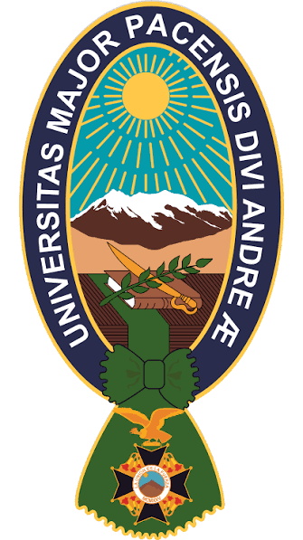
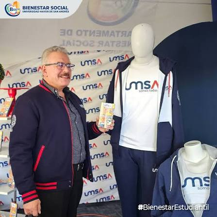

Lanzamiento de la Colección Académica
Adquiere productos corporativos oficiales. Descuento del 15% para estudiantes matriculados y personal docente presentando credencial digital o física en caja.

Indumentaria, marroquinería y artículos institucionales de la UMSA .
Adquiere productos corporativos oficiales. Descuento del 15% para estudiantes matriculados y personal docente presentando credencial digital o física en caja.
Confeccionado en felpa, con capucha ajustable y distintivo institucional.
Precio: 160 BOB

Corte cómodo, disponible en azul marino y blanco con identidad institucional.
Precio: 85 BOB
Compartimento acolchado para dispositivos de hasta 15.6 pulgadas y costuras reforzadas.
Precio: 190 BOB
Ofrecemos confección personalizada de indumentaria académica, distintivos para congresos y artículos de papelería corporativa para las facultades y carreras de la universidad.
Los productos cuentan con garantía de cambio por defectos de fábrica dentro del plazo establecido por la tienda.
Debes presentar tu matrícula universitaria vigente o credencial de trabajador de la UMSA junto con tu documento de identidad al cancelar en caja.
Aceptamos pagos en efectivo, tarjetas de débito o crédito y transferencias electrónicas mediante código QR.
Sí, previa coordinación con la administración correspondiente, pueden realizarse despachos a sedes regionales.